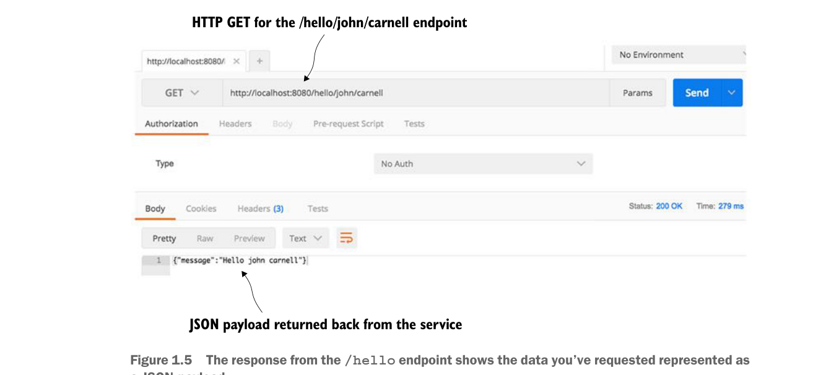

Our /hello endpoint is mapped with two variables: firstName and lastName.

Your Spring Boot service will communicate the endpoints exposed and the port of the service via the console.
If everything starts correctly, you should see what’s shown in figure 1.4 from your command-line window.
If you examine the screen in figure 1.4, you’ll notice two things. First, a Tomcat server was started on port 8080. Second, a GET endpoint of /hello/{firstName}/{lastName} is exposed on the server.
The response from the /hello endpoint shows the data you’ve requested represented as a JSON payload.